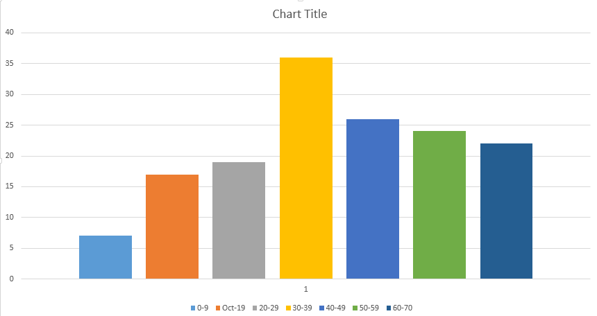

آخرین روزآمد: ۱۵ اردیبهشت ۹۷ ساعت ۱۶.۰۰
اطلاعیه
-
در کوییز روز دوشنبه، پنج سوال تستی از مباحث اکسترممهای مطلق و نسبی و روش لاگرانژ، انتگرالهای دوگانه روی نواحی مختلف، و انتگرالهای دوگانهی قطبی خواهیم داشت و یک سوال تشریحی از میان این سوالات تا پایان سوال ۱۳ صفحهی ۲۷
-
کسانی که در سامانهی گلستان اعتراض کردهاند، برای مشاهدهی برگهی خود در روز چهارشنبه ۵ اردیبهشت در ساعات زیر به اتاق مدرس مراجعه کنند:
- از آقاجانی تا دادخواه ساعت ۹ تا ۱۰
- از درودیان تا قنبری ساعت ۱۰ تا ۱۱
- از کاظمی تا یزدانشناس ساعت ۱۱ تا ۱۲
- نمرات امتحان میانترم در سامانهی گلستان وارد شده است. تا سهشنبه، ۴ اردیبهشت در سامانهی گلستان فرصت اعتراض دارید. دانشجو موظف است پاسخ سوالی را که نسبت بدان اعتراض دارد، به طور کامل (در صورت نیاز با مراجعه به پاسخنامه ) فرابگیرد، در غیر این صورت، اعتراض او ممکن است منجر به کسر نمره شود. میانگین نمرات ۳۸.۸۵ بوده و پراکندگی نمرات به صورت زیر است: 
- برای اعتراض به کوئیز روزهای یکشنبه، سهشنبه و چهارشنبه ساعت ۱۳-۱۵ به آقای زارعی در اتاق تیاِی مراجعه کنید.
- از هیجدم تا بیستودوم فروردین، در تالارها کلاس حل تمرین برای امتحان میانترم برگزار میشود.
- از صفحهی ۸ به بعد در جزوهی تمرینها، از میان تمرینهای ۱ تا ۱۱ و ۲۱ تا ۳۰، یکی به صورت تشریحی در کوئیز اول خواهد آمد.
- از ساعت ۱۰ الی ۱۳ هر روز دفتر تیاِی واقع در طبقه همکف دانشکده ریاضی جهت رفع اشکال دروس ریاضی عمومی دایر است.
دربارهی درس
در درس ریاضی ۲، مفاهیم حسابی، مانند دیفرانسیل و انتگرال را برای توابع چندمتغیره مطالعه خواهیم کرد. در این درس، همچنین با نحوهی رسم توابع در فضای سهبُعدی آشنا خواهیم شد و خواهیم دید که چگونه، با مطالعهی جبری مشتق این توابع، میتوان رفتار هندسی آنها را تعبیر کرد. در پایان با قضایای پرکاربردِ گرین و استوکس آشنا خواهیم شد که هر یک نحوهای برای محاسبهی انتگرالهای چندگانه به دست میدهند.
به دانشجویان پیشنهاد میکنم که با تارنمای زیر، برای رسم رویههای سهبعدی آشنا شوند. در این تارنما علاوه بر رسم رویهها، میتوان
منحنیهای تراز آنها را نیز کشید. به علاوه، رسم
منحنیهای فضائی نیز در این تارنما بسیار آسان است:
تارنما برای رسم
از تارنمای بالا مهمتر، آشنائی با نرمافزارِ میپل، به لاتین «maple»، است. رسم رویهها و منحنیهای تراز، از کوچکترین کاربردهای میپل است. میپل نه تنها برای محاسبات (مشتق، انتگرال و غیره) سودمند است، بلکه این نرمافزار در واقع یک زبان برنامهنویسی است که یادگیری آن برای کاربردهای مهندسی توصیه میشود.
برخی منابع درس در زیر آمدهاند:
- جزوهی مدرس که به صورتِ جلسهبهجلسه در همین تارنما بارگذاری خواهد شد،
- Calculus, Thomas/Finny
- Calculus, Stewart
زمان کلاسها، شنبهها و دوشنبهها از ساعت ۸ تا ۱۰ و چهارشنبهها از ساعت ۸ تا ۹ خواهد بود. علاوه بر آن، روزهای چهارشنبه از ساعت ۹ تا ۱۰ مدرس حل تمرین، با همکاری دانشجویان به حل تمرین خواهد پرداخت.
هر گونه اطلاعیهای که بدین درس مربوط باشد، در همین صفحه نوشته خواهد شد و دانشجو موظف است که خود را از روزآمدهای این صفحه باخبر بدارد (بالای صفحه، سمت چپ تاریخ آخرین روزآمد نوشته شده است).
نحوهی ارزشیابی
- دو کوئیز و ارزیابی مدرس و مدرس حل تمرین با پرسشهای شفاهی، مجموعاً ۱۵ درصد. لازم به ذکر است که هر کوئیز یک پرسش تشریحی و پنج پرسش تستی خواهد داشت. پرسش تشریحی از میان تمرینهائی خواهد بود که در تارنمای دانشکدهی ریاضی قرار داده شدهاند. در کلاس درس در این باره توضیح خواهیم داد. تاریخ احتمالی کوئیزها، ۱۴ اسفند ۹۶ و ۱۷ اردیبهشت ۹۷ خواهد بود. عموماً ارزیابیهای شفاهی در روز چهارشنبه صورت خواهند گرفت.
- امتحان میانترم، ۳۵ درصد. تاریخ: ۲۳ فروردین ۹۷، ساعت ۹ صبح
- امتحان پایانترم، ۵۵ درصد. تاریخ: ۲۹ خرداد ۹۷، ساعت ۸.۳۰ صبح.
جزوه و تمرینها
تمرینهای درس ریاضی عمومی ۲ را در پیوند زیر بیابید:تمرینهای درس ریاضی عمومی ۲.
جزوهی درس به صورت جلسهبهجلسه در زیر بارگذاری خواهد شد. از دانشجویان محترم خواهشمندم که اشتباهات نگارشی را از طریق ایمیل گوشزد بفرمایند:
- جلسهی اول
- جلسهی دوم
- جلسهی سوم
- جلسهی چهارم
- جلسهی پنجم
- جلسهی ششم
- جلسهی هفتم
- جلسهی هشتم
- جلسهی نهم
- جلسهی دهم
- جلسهی یازدهم
- جلسهی دوازدهم
- جلسهی سیزدهم
- نمونه سوال برای کوییز اول
- جلسهی چهاردهم
- جلسهی پانزدهم
- جلسهی شانزدهم
- جلسهی هفدهم
- جلسههای هجدهم و نوزدهم
- جلسهی بیستم
- بسط تیلور توابع دو متغیره
- جلسهی بیست و یکم
- جلسهی بیست و دوم
- جلسهی بیست و سوم
- جلسهی بیست و چهارم
- جلسهی بیست و پنجم و بیست و ششم
- جلسهی بیست و هفتم
- جلسهی بیست و هشتم
- جلسهی بیست و نهم
- جلسهی سیاُم